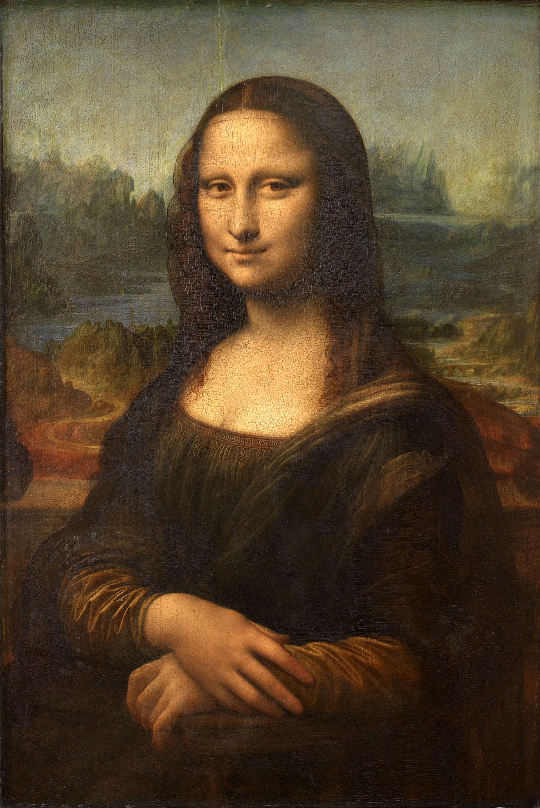
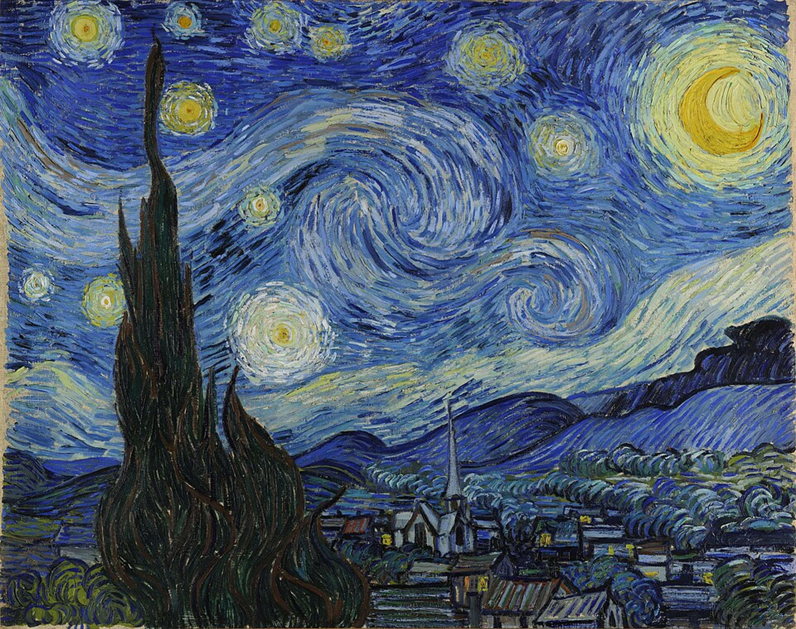
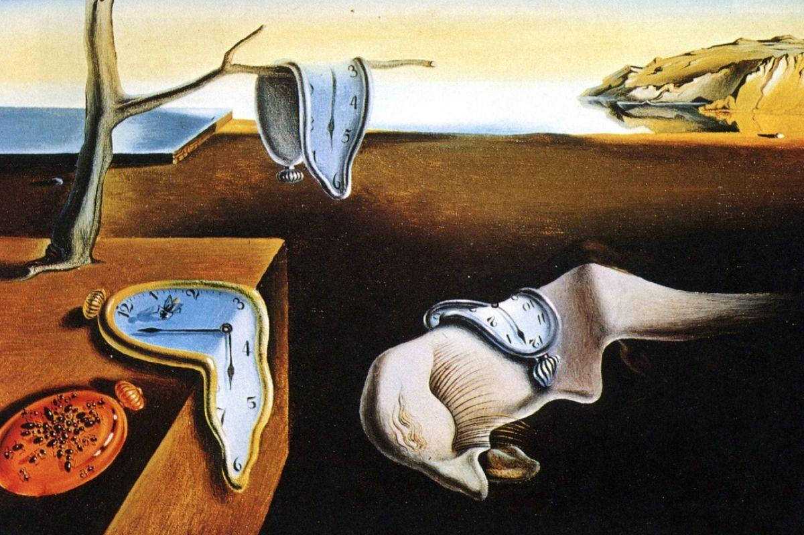
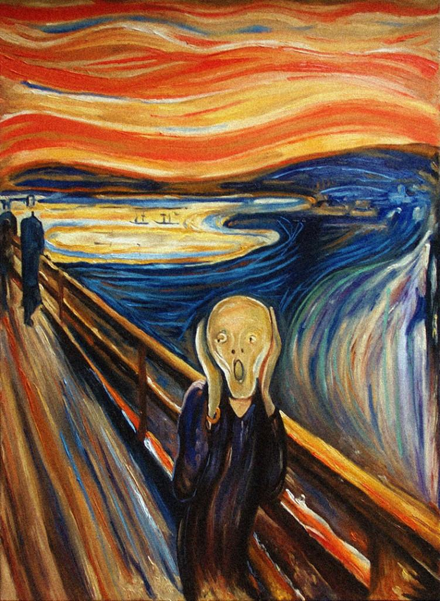
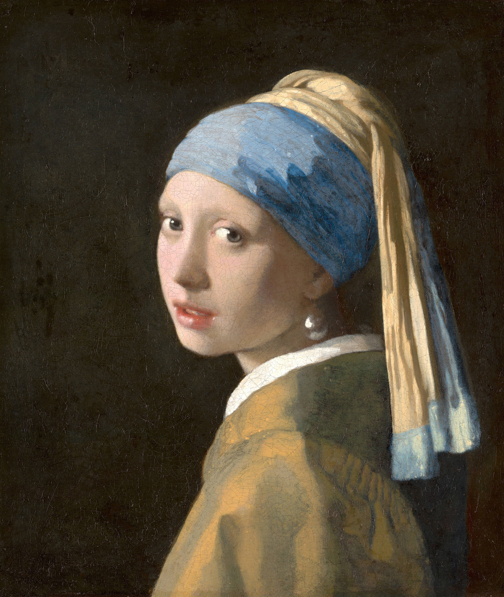
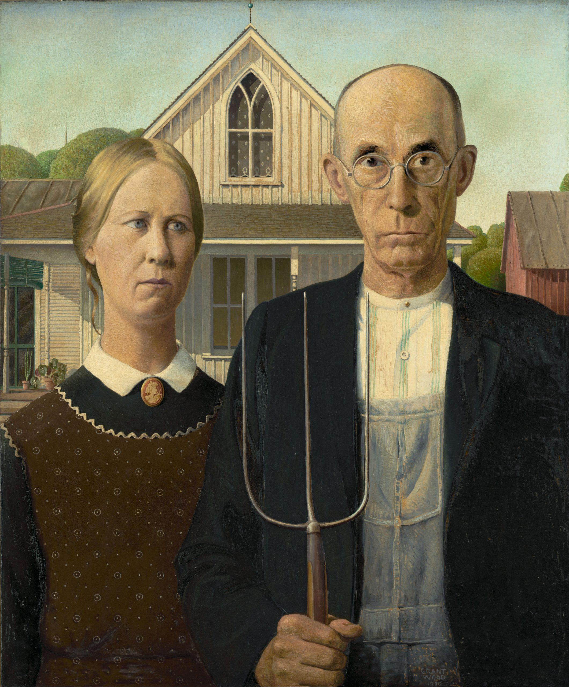
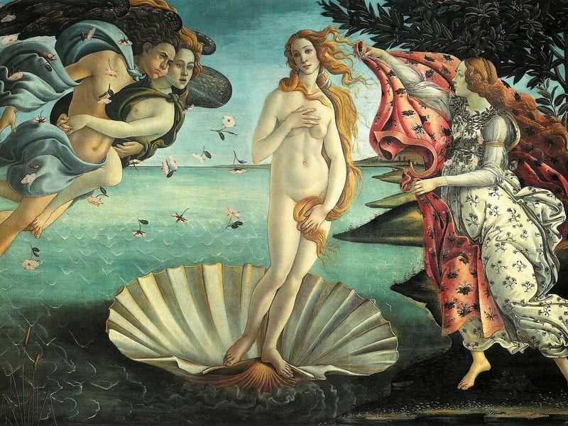
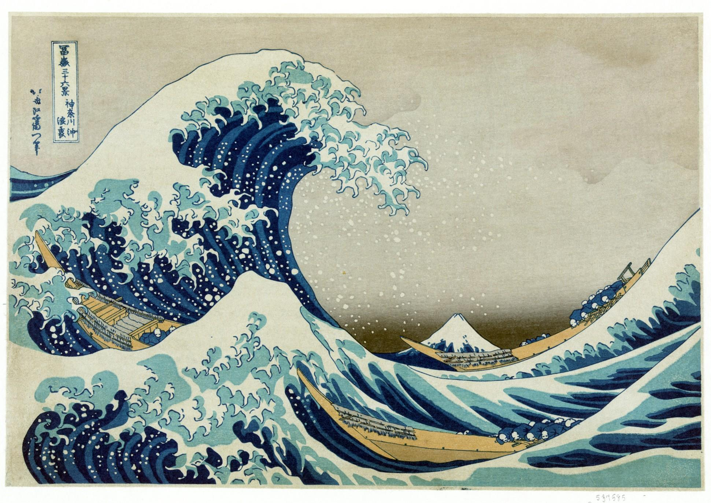
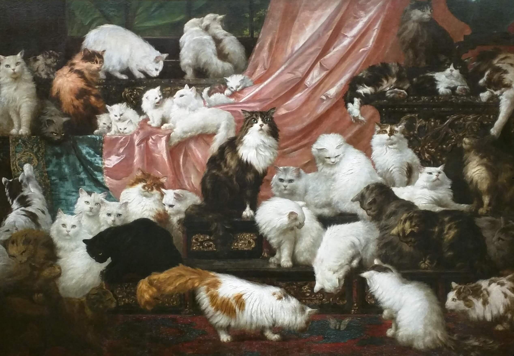

×

A curated collection of the world's most iconic paintings, brought together in one virtual gallery.

Leonardo da Vinci · c. 1503–1519

Vincent van Gogh · 1889

Salvador Dalí · 1931

Edvard Munch · 1893

Johannes Vermeer · c. 1665

Grant Wood · 1930

Sandro Botticelli · c. 1485–1486

Katsushika Hokusai· c. 1830–1832

Carl Kahler · 1891